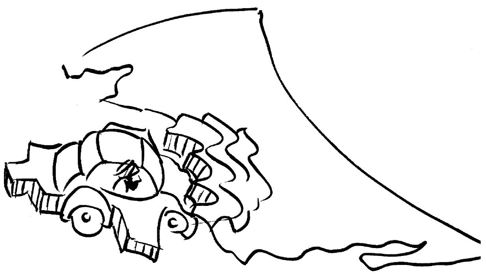
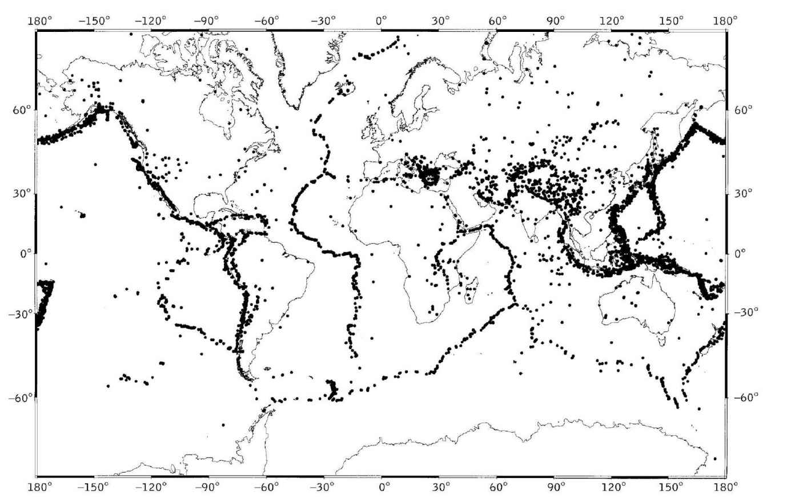
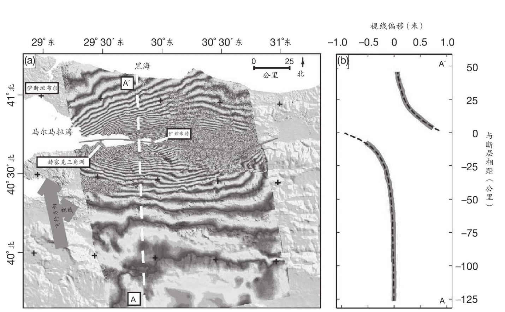
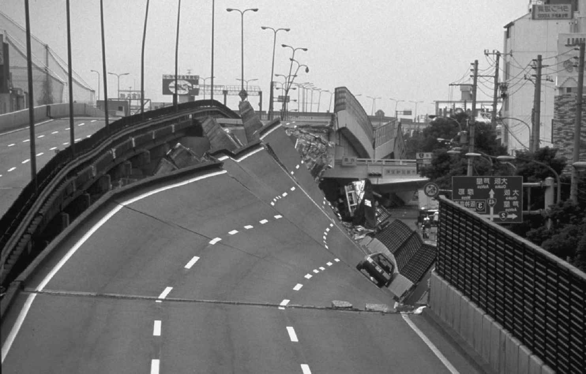
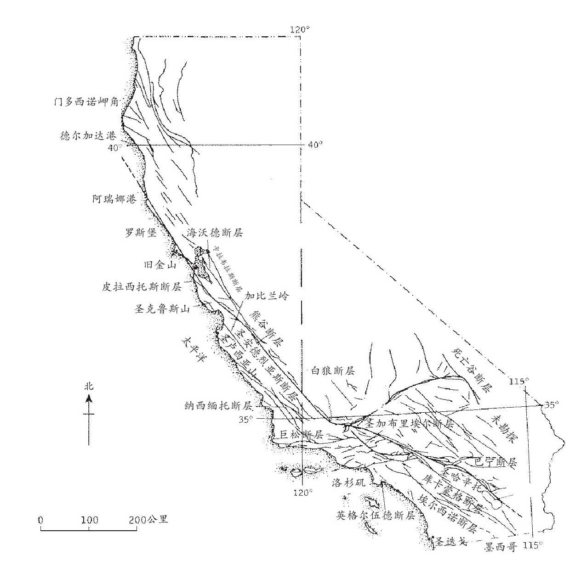
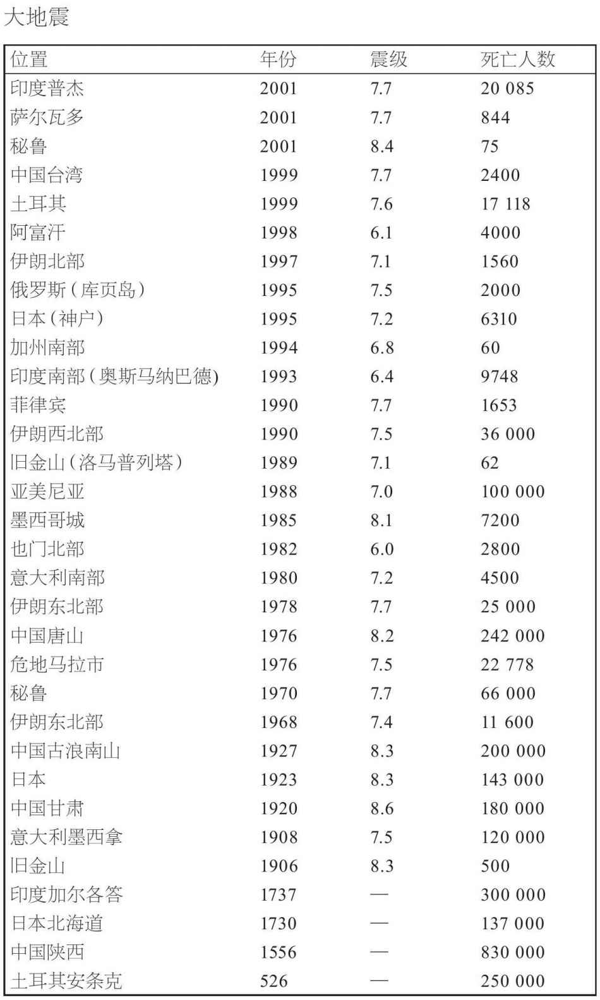

全速横穿大洋的超级油轮有着很大的动能，制动距离长达数十公里，然而没有什么能够阻挡整块大陆。我们已经听过印度和亚洲历时5500万年的慢动作碰撞的故事，其他构造板块也都在发生相对位移。板块的相互摩擦引发了地震。大地震地图所显示的板块分界线甚至比火山地图还要清晰。
全球定位系统测量显示了构造板块如何以每年几厘米的速度缓慢而稳定地滑过彼此。但在接近板块边缘处，滑动就没那么流畅了。在有些地方，运动仍然稳定，没有发生大地震，岩石仿佛被涂抹了润滑剂，抑或变得非常柔软，以至于它们的移动简直可以称之为蠕动。但很多板块边界却动弹不得。然而大陆持续移动，张力不断累积，最终岩石不堪忍受而突然破碎，地震就发生了。
随着洋壳潜没进地幔，也有些地震发生在很深的位置。但大多数地震都发生在顶部15-20公里处，那里的地壳又热又脆。岩石沿着所谓的断层线破碎，传出地震波。地震波看来是从地下的震源沿断层散发出去的。震源上方地表上的那个点叫作震中。
里克特和梅尔卡利震级表为地震划分了等级。前一种测量的是实际的波能，后一种则标记了破坏的效果。里克特震级表是用对数表示的，因此只使用数字1-10便可标记所有地震：从地震活跃区几乎无法察觉的频繁日常颤动，到有据可查的最大地震——迄今为止，最大规模的地震发生于1960年的智利海岸，其在震级表上的测量值为9.5级。震级表上每个点之间的能量差别是30倍。因此，例如，7级地震很可能比6级的破坏力大得多。令人啼笑皆非的是，查尔斯·里克特这位为震级表命名的加州地震学家1985年去世之后，他的许多个人记录却在1994年洛杉矶附近北岭镇的一场6.6级地震所引发的火灾中毁于一旦。
在美国加州，地震几乎就是家常便饭。巨大的太平洋板块在持续运动中，它没有下潜到美洲大陆之下，而是在所谓平移断层与大陆擦身而过。接合位置几乎从来都不是一条直线，因此，主要断层线上的扭结导致很多平行和交叉的裂缝或断层。其中大多数位置经历了频繁的小型地震，任何一处均有可能成为大地震的中心。包括板块边界本身在内，最著名的裂缝要数圣安德烈亚斯断层了。它起自加州南部，在洛杉矶内陆曲线行进，一路向西北直达旧金山，通向大海。它在1906年恶名加身，当时旧金山毁于一场大地震，随后可怕的火灾烧毁了所有的木质房屋。

图20 过去30年来地壳大地震（5级和以上）的分布。大多数聚集在构造板块的边界上，但也有少数发生在大陆腹地
洛杉矶与旧金山之间是一片不毛之地，很容易在光秃秃的山峦中辨认断层的痕迹。有时，斜坡上的一个微小变化即可标记其行踪。有时，可以看见它切断了地形，仿佛有一只大手持刀划过地图。断层似乎直线行进了100英里。我曾在洛杉矶和旧金山中间的一条高低不平的机耕道上沿着这条断层行进。断层东面是坦布洛山脉低矮的侵蚀丘陵，西面则是干燥的卡里佐平原缓坡，向下直通圣路易斯—奥比斯保和太平洋。从丘陵地带下来是一些干涸的河床。在河床与斜坡基部之处，似乎发生过一些奇怪的事情。那些河流并没有直接流向西方，而是向右急转90°，沿着丘陵基部向北走了几十米，然后又向左急转弯继续流向大海。华莱士溪是其中规模最大的河流之一，这条得名于美国地质勘探局的罗伯特·华莱士的河流深深地嵌入柔缓的丘陵斜坡。它在横穿断层时错位了130米。它起初必然是直接流下山坡的，沿途切出深深的河道。在一系列地震中，平原西部突然向北倾斜，河床自然也跟着转向了。冬汛无法在高耸的河岸上切出一条新的河道，所以这些溪流沿着断层流淌，直到再次与原先的河床会合。这不是一蹴而就的。罗伯特·华莱士及其同事综合使用了挖方和放射性碳测定年代技术，计算出了地质时期。史书中唯一一个记录发生在1857年，它解释了最后9.5米的平移。距离这次平移最近的两次移动都发生在史前，分别将河道平移了12.5米和11米。平均下来，圣安德烈亚斯断层在过去13000年以每年34毫米的速度滑动。如果保持这一速度，那么2000万年后，洛杉矶将会挪移到旧金山的北方，两个城市间的距离与当前一样，只不过现在它是在旧金山的南面。当然了，加州人都知道这条道路并不平缓，他们为此可算是吃尽了苦头。

图21 1999年土耳其伊兹米特地震前后数据相结合之后的卫星雷达干涉图，显示出地面的运动
在大陆尺度上测量以米或厘米为单位的移动距离，在过去几乎是不可能的，但如今就相对容易了。像美国加州和日本这样的断裂带上被放置了各种仪器。尤其是与全球定位系统连接的接收器，可以保证连续监视这些断裂带在地表上的位置。如果它们联入自动监测网，就可以立即向有关方面通知地震发生的准确位置和严重程度。正如我们将要看到的，它们还有助于地震预警。太空可以传送更清晰的实况图像。配备了合成孔径雷达的遥感卫星可以记录地面的形状，精确度非常高，以至于将地震前后分别拍摄的两张图片叠加后，可以生成干涉图样，显示出移动断层的精确区段及其运动。
就算表面上看来十分坚硬的大陆板块也受到压力和张力，它们有时也会移动。在美国简短的历史记录中，最大的地震并不是发生在加州，而是在美国东部。1811年，圣路易斯市附近的边城新马德里被3场里克特震级高达8.5级的大地震所撼动。这3场地震威力强大，足以摇动波士顿教堂里的吊钟，如果当时广阔的密西西比平原上存在大型的现代城市，也定会被夷为平地。迄今也不确定那场地震是由于在密西西比河沉积物的重压之下大地下沉所导致的，还是威力无穷的密西西比河本身恰恰就是地壳延展的产物。原因可能在于这里是某个海洋企图开放的备选线路，尽管最终它选择了阿巴拉契亚山脉另一侧的大西洋。但也许它是在作另一番尝试。无论原因如何，如果今天在新马德里再来一次地震，所造成的破坏将是不可估量的。
通过绘制地震深度图，我们就有可能跟踪海洋岩石圈在潜没带下降的位置，如太平洋板块潜入南美洲安第斯山脉之下的具体位置。在起初的200公里左右，岩石冷脆，因而会破碎，又因为接近表面，所以就产生了地震。但某些地震的震源似乎要深得多，有的深达600公里，那里的热量和压力会让岩石变得软韧，使它们更易变形而非破碎。一个可能的解释是，这些深层地震或许是由于整层结晶正在经历着相变，从海洋岩石圈中的橄榄石结构变为地幔中密度更大的尖晶石型结构。反对这一学说的论据是，这一过程只会发生一次，而同一地点迄今已经发生了好几次有记录的地震。但这也可能是因为有连续若干层橄榄石在经历相变。
2001年1月，整个印度西北部地动山摇，这场毁灭性的地震震中位于古吉拉特邦普杰市。此乃印度与亚洲的洲际碰撞余波未了。印度与中国西藏之间的相对运动仍在以每个世纪大约2米的速度持续累积。20世纪已经发生了一些严重的喜马拉雅地震，但一定有很多地区累积了大得多的张力。2米的滑坡便有可能产生7.8级的地震。但在印度从下方推入喜马拉雅山脉的逆断层中，某些部分已经积累了相当于4米滑坡的张力。实际上，某些地区500多年都没发生过严重的地震了。这样的“大地震”的确会是毁灭性的。尽管上个世纪以来建筑标准有所提高，普杰地震的证据表明，如今一次震级相当的地震可能造成的死亡人口比例与100年前无甚差别。而与此同时，处于危险之中的人口数量增加了10倍甚至更多。如果1905年的坎格拉 [37] 地震今日重现，遇难人数很可能会达到20万。如果恒河平原的某座大城市发生了地震，这个数字可能会上升一个量级。东京，另一个人口密集的地震带，从1923年至今尚未发生过大地震。如果那里现在发生一场大地震，就算日本的建筑标准有所提高，估计也会造成7万亿美元的破坏，这也许会导致全球经济的崩溃。

图22 近年来城市地震中的高速公路隆起导致了惊人的人员伤亡。这是1995年日本神户市的景象
人们常说，取人性命的是建筑物，而非地震。当然，地震中的大多数遇难者都死于倒塌的建筑物和后续的火灾。建筑物是否会在地震中倒塌，受到很多因素的影响。地震的力量显然十分重要，但震动持续的时间也很重要，其后便是建筑的设计。就小规模的结构而言，柔韧材料比脆硬的材料好。就像树木可以在风中摇曳，木框架的建筑物也可以在地震中摇摆而不致倒塌。重量轻的结构在倒塌之时不易致人丧命。但日本住宅传统使用的木材和纸张隔断墙更容易着火。地震中最糟糕的建筑大概就是砖石建筑以及加固质量很差的混凝土框架了；这在较为贫穷的地震易发国家极为常见。1988年亚美尼亚的斯皮塔克市附近的地震和1989年美国旧金山附近的洛马普列塔地震都是7级，但前者导致10万人死亡，而后者的死亡人数只有62人，这很大程度上是因为加州有非常严格的建筑物规范。那里的高层建筑非常坚固，并且不会与地震波的频率产生共振。许多高层建筑在地基内都安放了橡胶块来吸收震动。在日本，一些摩天大楼在屋顶处配有重物系统，可以快速移动以抵消地震引起的晃动。

图23 加州的圣安德烈亚斯断层并非地壳上的一条单一裂缝。连这张地图也是经过简化的
如果你曾经站在湿润的沙滩上上下晃脚，你或许会注意到，水会在沙中上升，你的脚会陷进去；沙子液化了。地震摇动潮湿的沉积物时，也会发生同样的现象。1985年墨西哥城地震的震中远在400公里之外，但城里还是有很多建筑被毁。那些建筑建在一个古湖的填拓地 [38] 上，地震波在淤泥中往复共振了将近3分钟，导致地面液化，便无法再支撑其上的建筑。无论建筑物的地基有多深，一旦地面液化，都无法再提供多少支撑了。在1906年和1989年旧金山附近的两次地震中，毁坏最严重的建筑物都位于海港区，就是建在填拓地上的。
地震袭击城市时，最大的危险之一便是火灾。在1906年的旧金山地震和1923年的东京地震中，死于火灾的人数都多过死于地震本身的人数。炉灶倾倒就很容易引起火灾，在木质建筑物的杂乱废墟中快速蔓延，破裂的煤气管道更是为之添柴加油。旧金山的消防力量不足；消防车都被困在车库里或堵塞的街道上，破裂的给水主管将城市的给水系统消耗殆尽。如今，像旧金山这样的地震易发城市都在开发燃气和自来水的所谓“智能管道”系统，在压力由于管道破裂而突然降低的情况下，该系统可以迅速地自动关闭相应区段。
地震期间最安全的地方当属开放、平坦的乡间，而恐慌则是最要不得的。在城市里，室外随处会有下落的玻璃和砖石，还不如待在室内的楼梯等坚固结构之下来得安全。日本和美国加州的学童都接受了如何进行自我保护的常规训练。然而，在真正的地震发生时，大多数人还是会愣在原地或惊慌失措地跑向室外。如果人们被困在倒塌的建筑物中，搜救人员可以使用一整套热敏相机和探听装置来找到他们，悲剧固然不可避免，但每一次灾难过后，都会发生不可思议的营救奇迹。
在某种程度上，地震是能够有把握地预测的。旧金山、东京和墨西哥城等城市必将经历下一次地震。但知道这一点对于住在那里的人没什么用处。他们想准确知道的是“大限”何时将至，地震又有多严重。但这些正是地质学家无法预测的。就像天气一样，地球也是一个复杂的系统，微小的起因就可以导致巨大的结果。亚马孙河畔那只虚构的蝴蝶振动一下翅膀就能影响欧洲的天气，同样，卡在断层中的小卵石也可以引发地震。人类大概永远不可能完全准确地预测地震，但以概率预测地震的效果越来越好了；距离地震发生的时间越近，预测的准确率越高。
在科学仪器出现以前很久，人类就一直在寻找地震预警，向他们通报即将来临的地震。特别是中国人，他们相当擅长观察奇怪的动物行为、水位的突然变化和水井中的含气量，以及其他地震前的征兆。正是利用这些指标，在1975年的一场毁灭性地震发生前数小时，海城市便被疏散一空，拯救了数十万人的生命。但一年后，24万人死于唐山，事先没有任何预警。其他线索包括微弱的光电闪烁，可能是由于矿物结晶受到挤压而产生的，就像按下压电式气体打火机会产生火星。有人对动物感知地震迫近的方式进行了认真研究；例如，日本有人观察鲶鱼是否会因为电子干扰而表现异常。但鲶鱼的异常行为有哪些？何况有多少户人家会监测鲶鱼呢？另有证据表明，在大地震来临之前会有极低频率的电磁波。不过这么说到底，最准确的指标看来要属穿行过地面的地震波了。
多数大型地震发生之前都有前震。问题在于很难说清某个小型的地颤是一个独立事件，还是大地震的前奏。但前震可以改变概率。根据历史记录，我们可以说，在接下来的100年内的某个时间，有可能发生一场大地震。但这样一来，明天发生地震的概率就变成了1/36500。每年可能会有10次小型地颤，其中任何一个都有可能是大地震的前震。因此，探测出小型地颤也就把未来24小时发生地震的概率提高到1/1000。了解到断层的具体位置、它们上次开裂是什么时候，并在所有适当的位置安放仪器，有时可将预测的准确率提高到1/20。但这仍然相当于说明天有95%的概率不会发生地震，基本上不能在电台广播上播报这一统计数值并以此为由疏散市民。不过它足以通知紧急部门待命，并停止运输危险化学品。
预测地震也许总是很难，但地震发生时是可以切实探测到的。这可以变成一种预警系统。1989年美国加州的洛马普列塔地震之后，这一系统得到了验证。尼米兹高速公路的隆起路段已经部分坍塌，救援人员试图救出困在下面的驾车人士。巨大的混凝土板很不稳定，余震会让它们轰然倒塌。地震的震中远在近100公里之外，因此，设置在断层中的传感器能够利用无线电以光速发送警报，救援人员会在以声速行进的地震波到达之前25秒收到预警，让人们有时间清场。未来，可以利用这一系统给出地震主震的简短警报。例如，从洛杉矶外的主断层线发出的冲击波需要一分钟才能到达该市。无线电警报或许不足以疏散人群，但联入计算机系统后，警报有助于银行保存账目、电梯停止运行并开门、自动阀封锁管道、急救车驶离建筑物。
